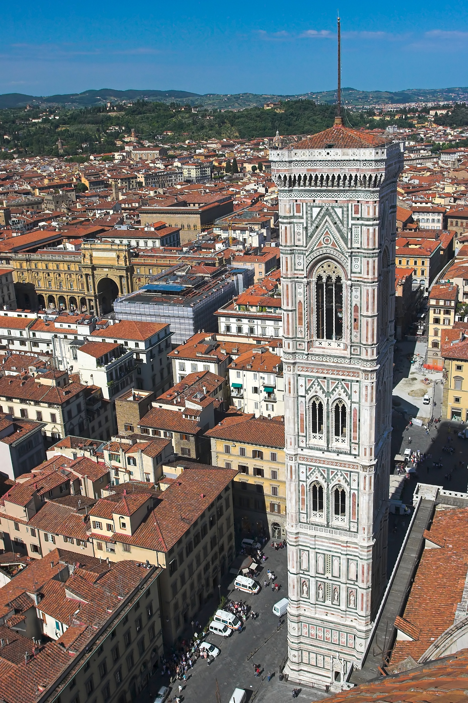

Florence has abundant different monuments, which they span across multiple eras of this city's rich and long-lasting history.
Iago Páramo Parada
18/10/2022
Giotto's Bell Tower is a free-standing campanile that is part of the complex of buildings that make up Florence Cathedral on the Piazza del Duomo in Florence, Italy. Standing adjacent to the Basilica of Santa Maria del Fiore and the Baptistry of St. John, the tower is one of the showpieces of Florentine Gothic architecture with its design by Giotto, its rich sculptural decorations and its polychrome marble encrustations.
Giotto's bell tower seen from the top of the Duomo.
The Palazzo Vecchio is the town hall of Florence, Italy. It overlooks the Piazza della Signoria, which holds a copy of Michelangelo's David statue, and the gallery of statues in the adjacent Loggia dei Lanzi.
In 1299, the commune and people of Florence decided to build a palace that would be worthy of the city's importance, and that would be more secure and defensible in times of turbulence for the magistrates of the commune.[1] Arnolfo di Cambio, the architect of the Duomo and the Santa Croce church, began construction upon the ruins of Palazzo dei Fanti and Palazzo dell'Esecutore di Giustizia, once owned by the Uberti family. Giovanni Villani (1276–1348) wrote in his Nuova Cronica that the Uberti were "rebels of Florence and Ghibellines", stating that the palazzo was built to ensure that the Uberti family homes would never be rebuilt on the same location.